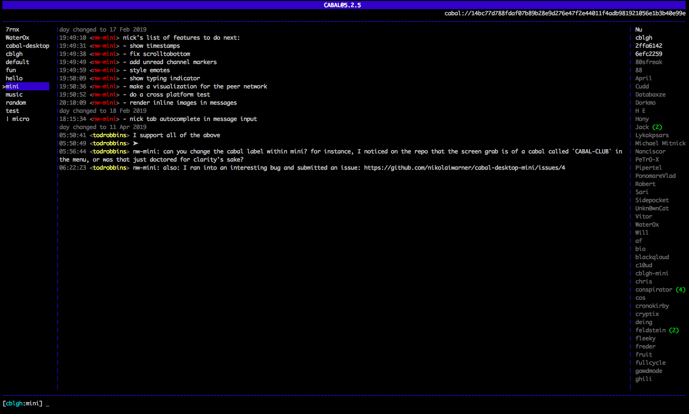
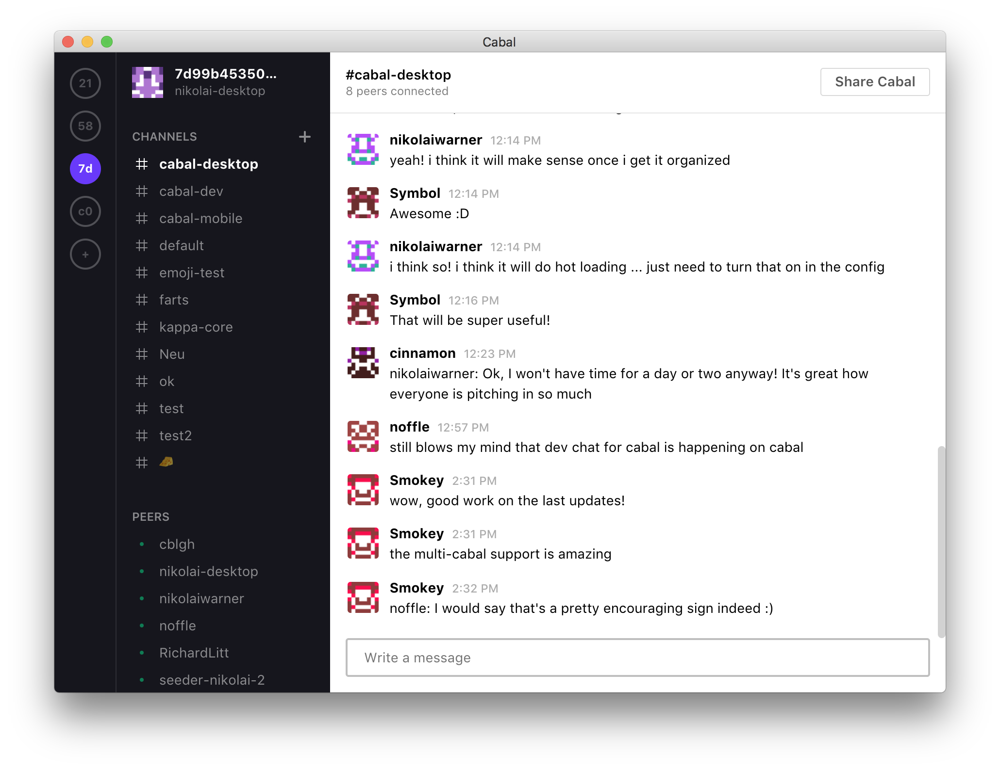
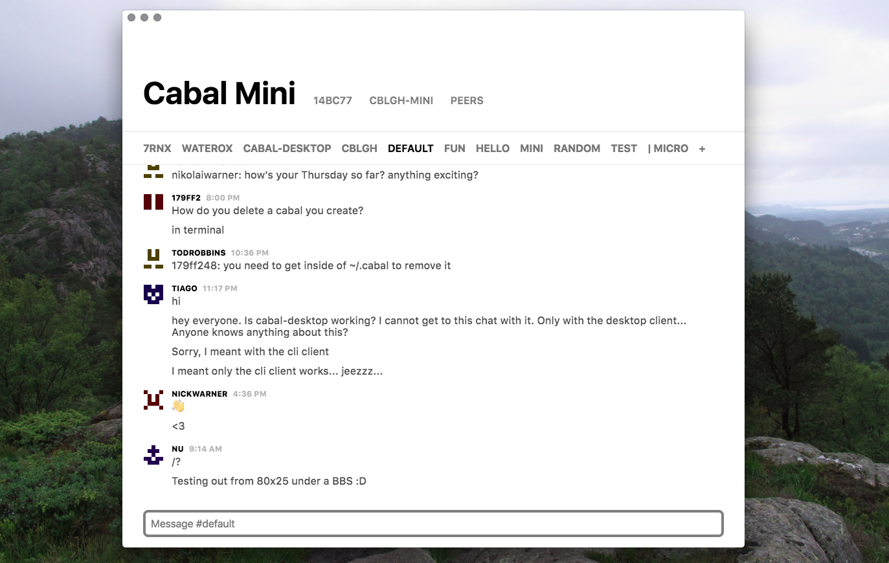
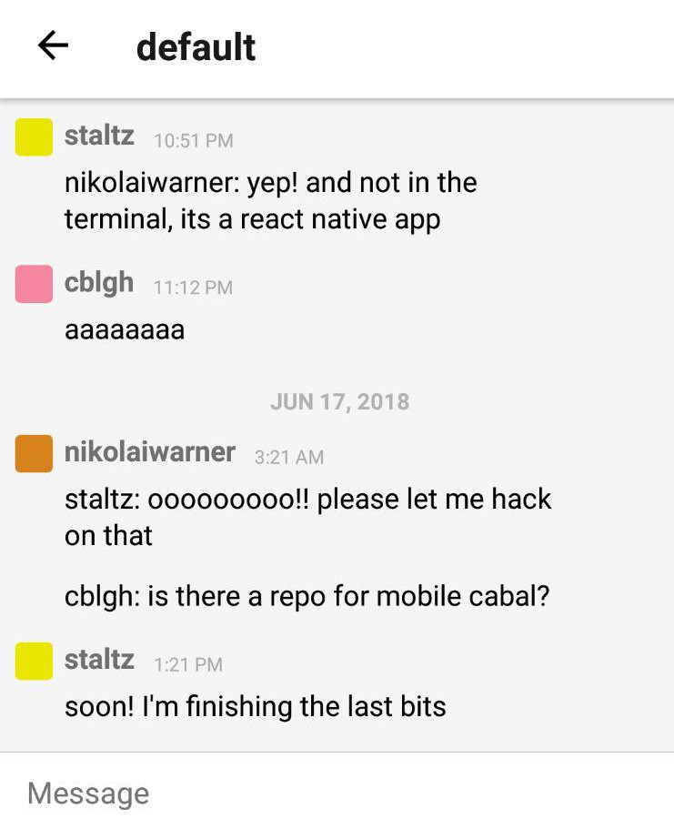
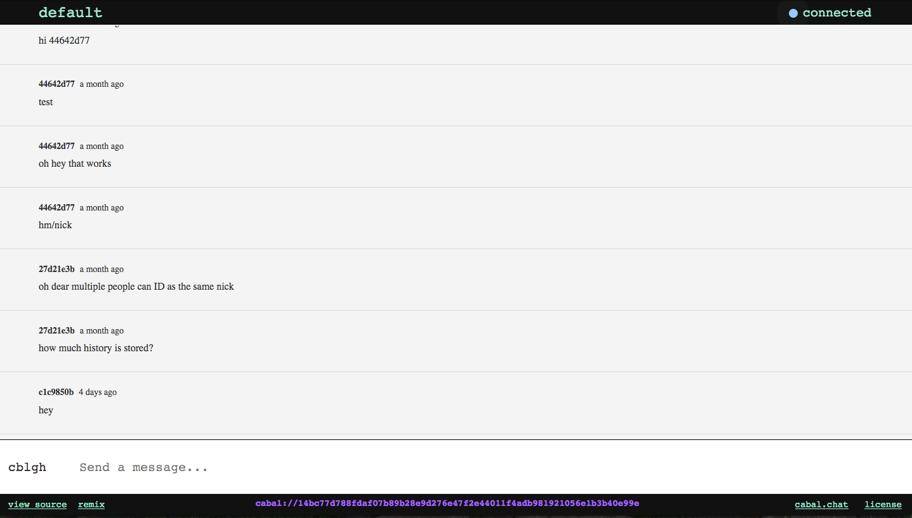
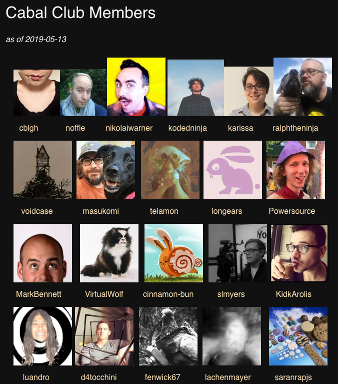
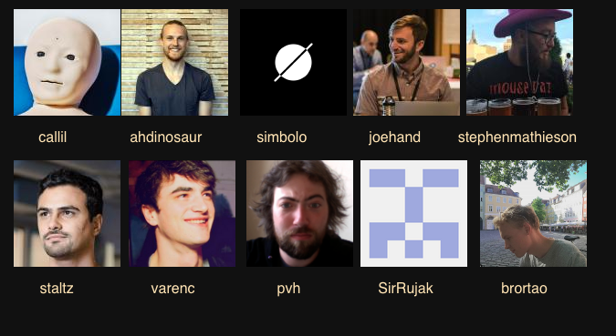

.rm-section-marker[Welcome] # Welcome to the Cabal Club ??? Hi, and thanks for coming! I'm Alexander Cobleigh (you might have seen me as cblgh on the net) and I'm one of the main developers of cabal. INTRODUCTION Before I dive into how Cabal works, I figured it would be a good idea to introduce what Cabal is. ORIGIN After that I want to give some context as to how Cabal got started as a project. ARCHITECTURE, CLIENTS, FUTURE Then we move into an overview of the architecture, followed by a look at the clients we have today and finally what the future might hold. -- ## Introduction -- ## Origin -- ## Architecture -- ## Clients -- ## Future --- .rm-section-marker[Introduction] # Cabal ??? Okay so, Cabal. Cabal is a local-first, peer-to-peer community platform. (and currently used as an engine of distributed chat clients) What this means is, * cabal works without servers * anyone can start a chat room (or, cabal) and any number of cabals, thanks to a practically infinite namespace * nobody needs to know anything about servers to join OR create a cabal. because there are no servers * (but you can USE servers as always-online and easy-to-connect-to peers. this is useful when firewalls make some people hard to reach) * cabal works great offline * offline isn't a special case with cabal; just a normal case. i've used cabal when i've been on buses or in cafés without wifi * cabal works great when offline because all messages can be read offline. you have the entire chat history on your computer. and you can write new messages while offline, too * any messages you write when offline will sync to other peers whenever they become available * so that means sync can happen over the internet, or over a local area network (even if there's no internet) * so to summarize: people joining a cabal for the first time will receive all the history of the cabal when they connect with the others who are in it. it's like a saying we have in sweden, sharing is caring ^:^ * cabal exists today * cabal is a thing that exists! it's under active development, and at times things break. but it exists and people use it to chat directly with each other, without any third party intermediaries. and that's pretty cool -- ## a local-first, peer-to-peer community platform -- ### cabal works without servers -- ### cabal works great offline -- ### cabal exists .highlight[today] --- .rm-section-marker[Origin] # A Short History of Cabal -- ## the start ??? The way Cabal originally kicked off was from participating and reading all of these cool discussions around the peer to peer web. Which was great, but they were all on Twitter. And I kind of thought it was ridiculous that we were discussing the possible futures of the web using this hellstorm of a centralized service. At the same time I was also hanging out in really big community slacks, with hundreds of people. And the entire arrangement just felt so fragile; one change to the terms of service and all of those communities would be scattered to the wind. I had also seen Karissa McKelvey and substack work on a really cool project called chatmesh, which was basically cabal but without any channels. On top of *that* Jim Pick had just released an inspiring proof of concept for dat where he demonstrated this shopping list that allowed many devices to add and remove items to and from the shopping list. And it was running in a web browser via glitch! FIRST STEPS Then things kind of became a blur. I wrote up my thoughts on Github on the 22nd of April, 2018 and started prototyping. After I'd gotten things going and I was starting to think about where to go next, Karissa proposed that chatmesh and cabal could merge together to a single project. And so we did and formed the cabal club. Around this time Noffle was also working on something called kappa-chat, and soon they also joined the project. Nikolaiwarner joined the fray as well and become a core contributor, and we were constantly getting lots of really nice drive-by pull requests adding features to clients. NOW Right now we have a stable core of 4 developers * Tony Ivanov (or Telamon) that's been pushing out amazing updates to the really hard and technical parts of Cabal * Nikolai Warner, who's been creating entirely new clients * Noffle, who has been fixing tricky replication bugs * and myself, I kind of dabble in all of the things at once hehe -- ## first steps -- ## now --- .rm-section-marker[Architecture] # Overview * Public key-based identity (ed25519) * Peers * Logs * Messages * Views * Connectivity ??? Let's move on to the guts of Cabal. --- .rm-section-marker[Architecture] # Peers ??? Let's start with peers. The peer is the agent doing the writing and posting of messages. -- ### Keypairs ??? Each peer is represented by a keypair (one key is the public key, and the other key is the so called private key). A peer writes messages to a log using their private key, and only that peer can write messages to their log. -- ### The Log ??? An important point is that we only ever _append_ to this log. We never delete from it, or insert entries at earlier points in history. The reason being that this append-only nature proves itself to have many valuable properties for distributed systems which generally make life a thousand times easier, but going deep on those properties is a bit out of the scope for this session. This append-only log is eventually shared with other peers. -- ### Connectivity ??? To share logs between themselves, peers connect to each other over a kind of rendezvous, by which i mean a piece of information that ties the disparate peers together into a cohesive whole. This rendezvous is the cabal key. The cabal key is basically a 64 character long string. (a string representation of an ed25519 public key) -- ### Views ??? So now we have a bunch of logs, one from each peer. Each log is then combined into a cohesive view, like individual ingredients used to bake a single cake. This view is created by taking the individual messages from each log and interleaving them based on a measure of time. Currently that measure is just a timestamp, but we'll make it more robust in the future. Each interleaved message has a message type and optionally content relating to the particular message type. Cabal as it is today currently defines a few message types, but the types are not enforced by the protocol. The message types ARE agreed upon by the current clients, but anyone can come along and create a new client which defines entirely new message types and disregards all the existing ones, if they'd like to. Their client would work just as well as any of the other clients, and without needing to rewrite any core parts of the library. --- .rm-section-marker[Architecture] # Kappa Architecture ??? So this structure that we've seen here, where you have a log which you only ever append to, and then creating a view of the current state by using the log. This a pattern known as a kappa architecture and it's starting to become popular as an alternative to the kinds of databases that have been used so far in software development. There are some good resources on the net which can help you grok the idea, including a lecture by martin kleppman and a nodejs kappa workshop by noffle. You'll find them easily if you duckduckgo. --- .rm-section-marker[Architecture] # Dependency Hierarchy ``` cabal clients cabal-core cabal-core discovery-swarm dat-swarm-defaults kappa-view-level kappa-core multifeed-index multifeed hypercore hypercore-protocol ``` --- .rm-section-marker[Architecture] # Summary ??? **So to summarize** * We have a chat view, and this view is composed of messages. * Each messsage has a message type and comes from a single log. * The log belongs to a peer. The log is append-only. * And peers connect to each other over a cabal key in a mesh-like fashion. -- * We have a chat view, and this view is composed of messages. -- * Each messsage has a message type and comes from a single log. -- * The log belongs to a peer. The log is append-only. -- * And peers connect to each other over a cabal key in a mesh-like fashion. --- .rm-section-marker[Clients] # Clients --- .rm-section-marker[Clients] # Cabal Terminal Client <div class="grid"> </img> </div> --- .rm-section-marker[Clients] # Cabal Desktop <div class="grid"> </img> </div> ??? * needs patching --- .rm-section-marker[Clients] # Cabal Mini <div class="grid"> </img> </div> --- .rm-section-marker[Clients] # Cabal Mobile <div class="grid"> </img> </div> ??? * needs contributor help with react native parts * ask andré if he can help now that he's in berlin? --- .rm-section-marker[Clients] # Message Land <div class="grid"> </img> </div> ??? * a web client made by joe hand, that i'll talk more about soon --- .rm-section-marker[Clients] # Community Projects * cabal-ses-bot by **Jim Pick** -- * message.land by **Joe Hand** -- * paperslip by **cblgh** -- * crepes by **cblgh** ??? #### Use cases * dw blair and farm communication * toronto mesh has been researching how to add app support for cabal to their meshnet * hoodownr and anonymous community venting for art project --- .rm-section-marker[Future] # In the Pipeline * at-rest encryption & blind peers -- * `cabal-client`: a minimal library for building your own client -- * moderation -- * DNS shortnames e.g. * cabal://cabal.chat * cabal://cblgh.org -- * private channels ??? * at-rest encryption & blind peers * the idea behind a blind peer is basically allowing anyone to help host your cabal, but without being able to see any of the history or who is in a cabal. it will be really cool once we get into place * cabal-client: a minimal library for building your own client * moderation * in addition to working on cabal and holding down a frontend job at a startup, i'm also doing my master's thesis on the topic of moderation in decentralised chat systems. or _"How to hide peers exhibiting malicious behaviour in a distributed chat context"_ * my aim with the thesis is to produce a nodejs module that can be used by any decentralised chat system (whether cabal or secure scuttlebutt) to implement a trust layer ontop of the system's replication layer. i'm aiming at having a irst version of it implemented in Cabal by October. * DNS shortnames * cabal://cabal.chat * cabal://cblgh.org * private channels --- class: middle center .rm-section-marker[Future] # Funding --- .rm-section-marker[Future] <div class="contrib-grid"> </img> </img> </div> ??? I also want to thank everyone who's joined the cabal club by contributing to the clients or the core. It's been so cool when someone comes by, says hi and then say something like "oh and btw, here's a pull request to add *really cool and unexpected feature*". It floors me like literally every time. Alright, I think that's all from me. If you want to get in touch with me, you can use that email there. Thanks. --- class: middle center .rm-section-marker[Fin.] # Thanks `cblgh@cblgh.org`